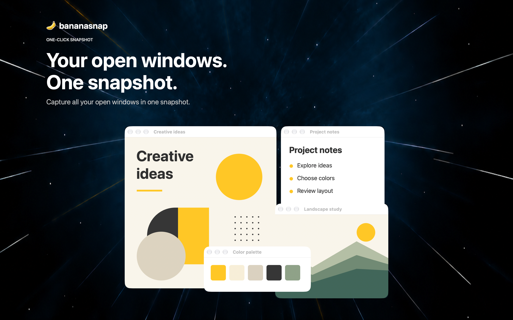

Screen capture / Mac
BananaSnap
Keep the moments that matter.
Capture your screen, organize the details, and find that moment again. A home for everything you save.
Download on Mac App Store ↗
01
Capture a window or workspace
02
Find captures by date or app
03
Copy text straight from images
A closer look.
Scroll to explore. Select a screenshot to take a closer look.